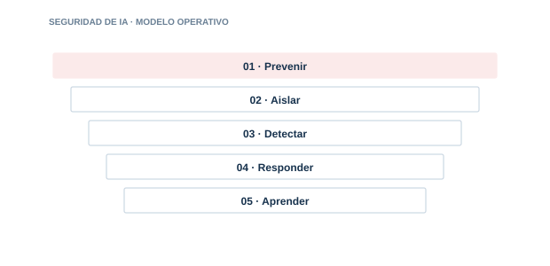

04 · PILAR
Seguridad de IA
Aplicar seguridad por diseño a LLM, RAG, agentes, MCP y modelos.

Directorio del pilar6 guías · acceso directo
04.0104.0204.0304.0404.0504.06
Seguridad LLM
Protege entradas. contexto. salidas. secretos y consumo del modelo.
Seguridad RAG
Asegura la recuperación. las fuentes. los permisos y el contexto enviado al modelo.
Seguridad de agentes
Limita la autonomía y el impacto de agentes que usan herramientas y ejecutan acciones.
Seguridad MCP
Gobierna servidores. herramientas. manifests. autorización y cadena de suministro MCP.
Seguridad de modelos
Protege pesos. endpoints. datos de entrenamiento y disponibilidad.
AI Hardening
Los 8 dominios para endurecer modelos. agentes y plataformas. con modelo de madurez y mapeo a marcos.
01
PrevenirControl y evidencia aplicable
02
AislarControl y evidencia aplicable
03
DetectarControl y evidencia aplicable
04
ResponderControl y evidencia aplicable
05
AprenderControl y evidencia aplicable
Cada guía incluye explicación, implantación, controles, evidencias, errores habituales, métricas y referencias.